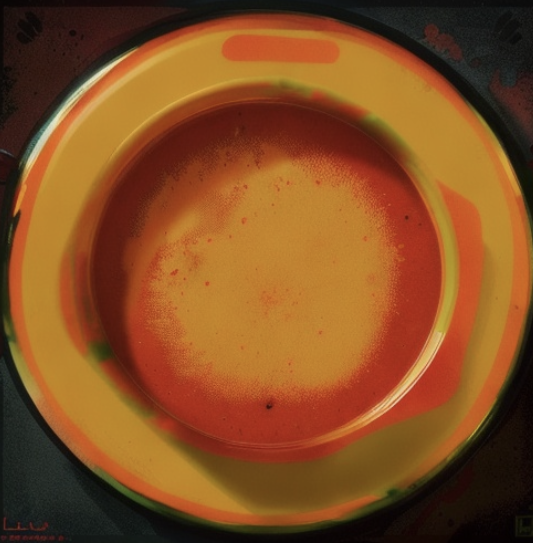

Tomato Soup

It's good for the soul
Soup is pretty good sometimes. It's not something you likely brag about, or even suggest on a night out, but it does the job. This is going to teach you how to make soup, tomato soup that is. Because today we are just a couple of wild kids making soup with tomatoes.
Ingredients
- chopped fresh tomatoes 4 cups
- sliced onion 1
- garlic cloves 4
- chicken broth 2 cups
- butter 2 tablespoons
- flour 2 tablespoons
- salt 1 tablespoon
- sugar 2 teaspoons (or more!)
Steps
- get your shit together
- use a pot on medium heat
- put the tomatoes, onion, garlic, and chicken broth into the pan
- boil it like the witch you are
- let it boil for about 20 minutes
- remember that food mill i never mentioned until right now? use it to drain the pot into a bowl
- put the pot back on the heat and add butter
- add the flour and stir until you get a roux (whatever the fuck that means)
- add the red water in the bowl back into the pot
- add the salt and sugar
- no really stop being shy and add more salt and sugar
- you have made soup